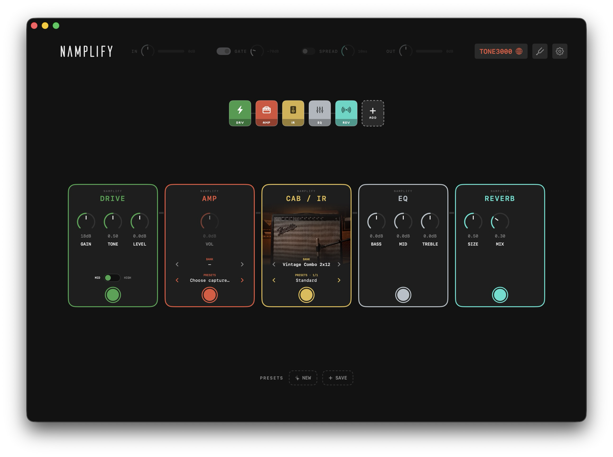
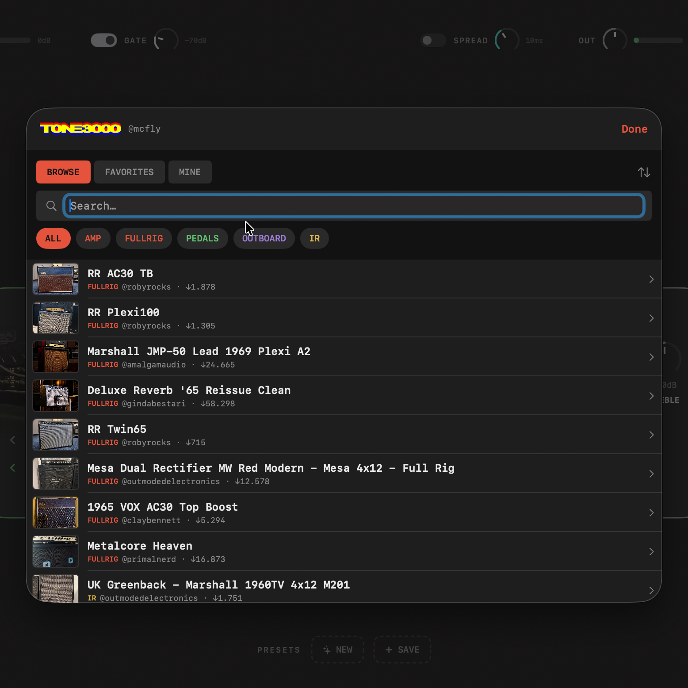
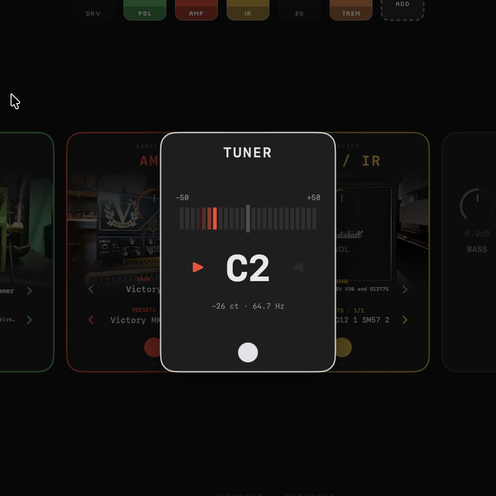
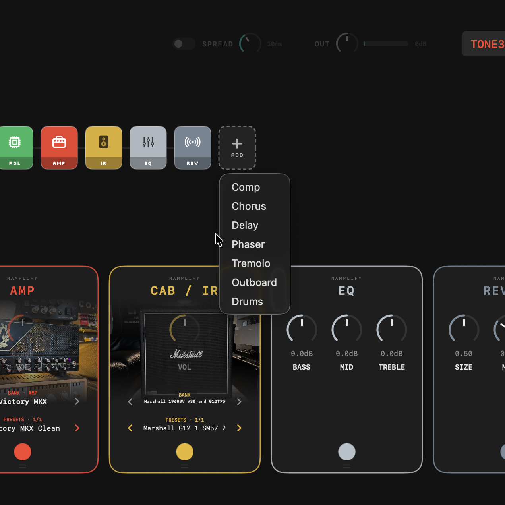
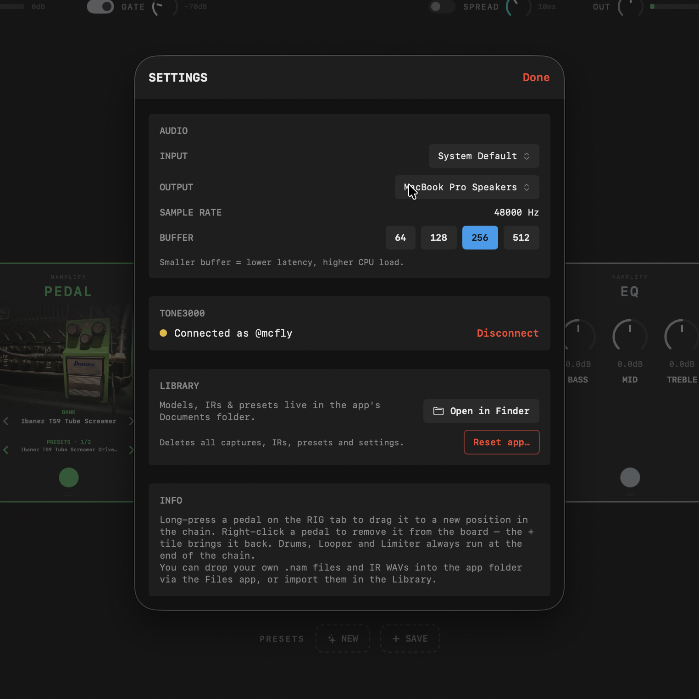

Amps, pedals and IRs from TONE3000, sorted into stompboxes — every sound one click away. No DAW, no plugin host, no routing.

NAMplify keeps it easy: amps, pedals and IRs from TONE3000 sort themselves into the right stompbox — organized in banks you flip through like channels, with presets right on the pedal. Your whole rig on one screen, every sound one click away. No importing, no folders, no menu diving.
TONE3000 integrated · sign in on the fly
Amp in the middle, effects around it. Gate, comp, drive, EQ, modulation, delay and reverb — drag them into any order, right-click to remove.
Browse, favorite and download amps, pedals, outboard gear and IRs straight from TONE3000 — sorted automatically into their own lists and pedals. Downloads land in banks you can flip through.
One-click tuner that floats over the board (and mutes the output), a small drum machine to play along to, and presets to switch sounds in one click.




If NAMplify saves you time or you just enjoy it, you can throw a coffee my way. No pressure — it stays free either way.
Buy me a coffee